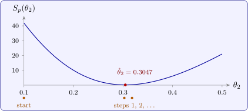

12.5 Conditionally linear parameters
Many non-linear models are linear in some of their parameters. In \(\theta _1e^{-\theta _2x}\) and \(\theta _1x/(\theta _2 + x)\), once \(\theta _2\) is fixed the model is a regression through the origin on a single known regressor. This can be used to reduce the search to the non-linear parameters alone.
Theorem 12.5.1 (Profile least squares). Suppose \(\mathbf {f}(\boldsymbol \theta ) = \mathbf {G}(\boldsymbol \phi )\boldsymbol \beta \), where \(\boldsymbol \theta = (\boldsymbol \beta , \boldsymbol \phi )\) and \(\mathbf {G}(\boldsymbol \phi )\) has full column rank for each \(\boldsymbol \phi \). For fixed \(\boldsymbol \phi \), \(S\) is minimised over \(\boldsymbol \beta \) by \(\hat {\boldsymbol \beta }(\boldsymbol \phi ) = (\mathbf {G}^\top \mathbf {G})^{-1}\mathbf {G}^\top \mathbf {y}\), with minimum \[ S_p(\boldsymbol \phi ) = \mathbf {y}^\top \bigl [\mathbf {I} - \mathbf {G}(\mathbf {G}^\top \mathbf {G})^{-1}\mathbf {G}^\top \bigr ]\mathbf {y} . \] The least-squares estimate is \(\hat {\boldsymbol \phi }\), the minimiser of \(S_p\), together with \(\hat {\boldsymbol \beta }(\hat {\boldsymbol \phi })\). With a single linear parameter, \(S_p(\phi ) = \mathbf {y}^\top \mathbf {y} - (\mathbf {g}^\top \mathbf {y})^2/\mathbf {g}^\top \mathbf {g}\).
Proof. For fixed \(\boldsymbol \phi \) the model is linear with model matrix \(\mathbf {G}(\boldsymbol \phi )\), so the minimum over \(\boldsymbol \beta \) is the least-squares fit and the minimum value is the residual sum of squares \(\mathbf {y}^\top (\mathbf {I} - \mathbf {H})\mathbf {y}\) (Theorem 3.4.2). Then \(\min _{\boldsymbol \beta ,\boldsymbol \phi }S = \min _{\boldsymbol \phi }\min _{\boldsymbol \beta }S = \min _{\boldsymbol \phi }S_p(\boldsymbol \phi )\). With one column \(\mathbf {g}\), \(\mathbf {y}^\top \mathbf {Hy} = (\mathbf {g}^\top \mathbf {y})^2/\mathbf {g}^\top \mathbf {g}\). □
With one non-linear parameter, \(S_p\) is a function of one variable that can simply be plotted, which shows at once whether there is a single minimum and roughly where it is (Figure 27). This is also the way to fit a linear spline with an unknown knot (Section 9): for each trial knot \(t\) the model is linear, and \(t\) is chosen to minimise the residual sum of squares (Problem 12.6.3).

Example 12.5.2. The rate \(y\) of an enzyme reaction was measured at six concentrations \(x\) of its substrate:
| \(x\) | 0.5 | 1 | 2 | 4 | 8 | 16 |
| \(y\) | 2.3 | 3.1 | 5.2 | 6.4 | 8.2 | 8.8 |
Fit the Michaelis–Menten model \(y = \theta _1x/(\theta _2 + x) + \varepsilon \), first by the Lineweaver–Burk regression and then by least squares, and compare.
Solution. Lineweaver–Burk. Regressing \(1/y\) on \(1/x\) (with \(1/x = 2, 1, 0.5, 0.25, 0.125, 0.0625\) and \(1/y = 0.4348, 0.3226, 0.1923, 0.1563, 0.1220, 0.1136\)) gives \(1/y = 0.1115 + 0.1708(1/x)\), so \[ \tilde \theta _1 = \frac {1}{0.1115} = 8.968, \qquad \tilde \theta _2 = \frac {0.1708}{0.1115} = 1.532 . \] On the original scale these leave \(S = 1.057\).
Least squares. By Theorem 12.5.1, with \(g_i = x_i/(\theta _2 + x_i)\), \(\hat \theta _1(\theta _2) = \sum g_iy_i/\sum g_i^2\). A few trial values give
| \(\theta _2\) | \(\hat \theta _1(\theta _2)\) | \(S_p(\theta _2)\) |
| 1.5 | 9.299 | 0.754 |
| 2.0 | 9.994 | 0.303 |
| 2.5 | 10.614 | 0.694 |
so the minimum is near \(\theta _2 = 2\). Gauss–Newton started from the Lineweaver–Burk values converges in four steps to \[ \hat \theta _1 = 9.938, \quad \hat \theta _2 = 1.958, \qquad S(\hat {\boldsymbol \theta }) = 0.300 , \] with standard errors \(0.328\) and \(0.208\) from \(s^2 = 0.300/4 = 0.075\). The fitted rates are \(2.02\), \(3.36\), \(5.02\), \(6.67\), \(7.98\), \(8.86\).
Comparison. The Lineweaver–Burk estimates leave a residual sum of squares three and a half times as large, and they lie two to three standard errors from the least-squares estimates. The reason is the transformation: the smallest rates, at the smallest concentrations, become the largest values of \(1/y\) and \(1/x\), and their errors are magnified most, so they dominate the linear fit. The transformation is useful for a starting value and for a plot, but not for the final estimates.
Questions on this section
Stuck on something here? Ask below and it stays attached to this topic.